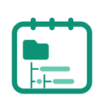

Notes
notepad.pw & rich-text notes
Recent notes
No notes yet.
Click New Note to open a fresh notepad.pw page.

notepad.pw & rich-text notes
No notes yet.
Click New Note to open a fresh notepad.pw page.
Where do you want to write?